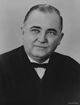

FORMER JUDGES
Judge John S. Gonas
John S. Gonas was born May 14, 1907 in Crossfork, Pennsylvania. He served in the
Indiana House of Representatives from 1936 to 1938 and in the Indiana Senate from 1940
to 1948. He was judge of the St. Joseph County Juvenile and Probate Court from 1948 to
1958.
Judge Gonas was elected as a South Bend December to the Indiana Appellate Court in
1958, serving one term from January 1, 1959 to December 31, 1962. He served as Chief
Judge in the May 1959 session.
In the course of his political career he was also a candidate for U.S. Representative,
Governor of Indiana Lieutenant Governor, and other posts. He was member of
the American Bar Association and the American Trial Lawyers Association.
Judge Gonas died on Fairhope, Alabama in 1994 at the age of 86, with services at St.
James Catholic Church there. He was survived by his sons, John, and Roy.
Indiana House of Representatives from 1936 to 1938 and in the Indiana Senate from 1940
to 1948. He was judge of the St. Joseph County Juvenile and Probate Court from 1948 to
1958.
Judge Gonas was elected as a South Bend December to the Indiana Appellate Court in
1958, serving one term from January 1, 1959 to December 31, 1962. He served as Chief
Judge in the May 1959 session.
In the course of his political career he was also a candidate for U.S. Representative,
Governor of Indiana Lieutenant Governor, and other posts. He was member of
the American Bar Association and the American Trial Lawyers Association.
Judge Gonas died on Fairhope, Alabama in 1994 at the age of 86, with services at St.
James Catholic Church there. He was survived by his sons, John, and Roy.
